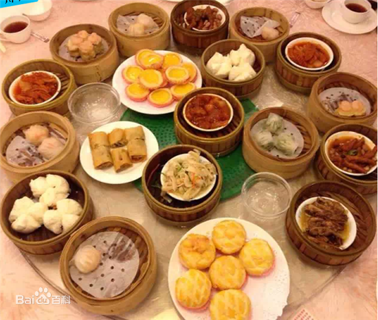
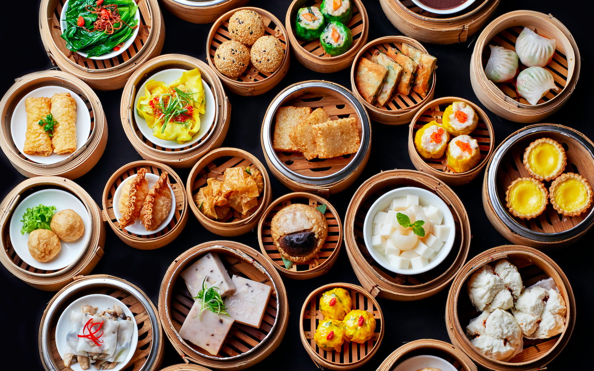

-
制作人:大数据1班191205103001梁维浩
广州是国家历史文化名城，时广府文化的辐射中心，每年举办的中国进出口商品交易会吸引了大量客商以及大量外资企业、世界500强企业的投资。
还有广州的饮食文化源远流长，有许多人直呼“食在广州”。
广州，广东省辖地级市，简称“穗”，又有人称羊城、花城。广州一大标志性建筑是广州塔。广州塔又称小蛮腰，其位于中国广东省广州市海珠区（艺洲岛）赤岗塔附近，
距离珠江南岸125米，与珠江新城、花城广场、海心沙岛隔江相望。
广州塔塔身主体高454米，天线桅杆高146米，总高度600米。是中国第一高塔，是国家4A级旅游景区。
广州酒家
广州酒家的前身称西南大酒家，座落于广州的下九路、第十甫、文昌路、十八甫交汇处的东北角，面向西南，俯视四方。这里又是西关最繁荣之地，在1.5公里范围内，东涵城里的太平、丰宁（今人民路）、大德、一德、惠福、大新、惠爱（今中山六路）等路段，南接十三行、西堤、沙面，西通西关“三宝”（宝华、宝源、多宝路），北连恩洲、泮塘等富乡，紧贴华林古寺。 钱庄、金铺、外贸行栈和绸缎布匹、酸枝家私店铺林立，万商踊至，贩夫如鲫。 加之千百年来形成的书香门第之风，馆舍宅第，鳞次栉比，富商巨贾、官宦遗老，以及西关阔少、名门闺秀云集，因此在这里经商，可谓“得天独厚”，占尽地利。
早茶点心
广州人饮早茶，有的是当作早餐的，一般都是全家老小围坐一桌，共享天伦之乐。 有的喝完早茶即去上班，有的则以此消闲。消闲族大多为街坊退休老人，他们一般来得最早，离去最迟，从早上茶馆开门可以一直坐到早茶“收档”。 这类茶客不去豪华酒家、高档茶楼或宾馆，而到就近街边经济实惠的小茶馆。 如去高档茶楼，人均消费可以和酒宴差不多。“请早茶”也是广州人一种通常的社交方式。

早茶点心

越秀公园
越秀公园是广州最大的综合性公园。越秀公园主体越秀山以西汉时南越王赵佗曾在山上建“朝汉台”而得名。 园内有清代所建一座石牌坊，上面刻着“古之楚亭”四字，不少史籍将“楚庭”（或“楚亭”）视为广州的雏型 [1] 。 园内还有镇海楼、古城墙、四方炮台、中山纪念碑、孙中山读书治事处碑、伍廷芳墓、明绍武君臣冢、海员亭、五羊石像、五羊传说雕塑像群、球形水塔等景点。
谢谢观看